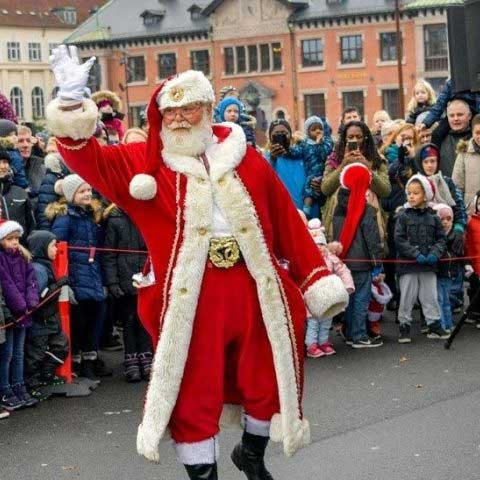
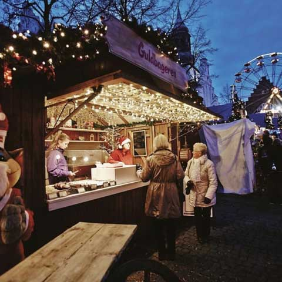

Julemarkedet i Aalborg emmer og dufter af jul. Her er alt hvad
julehjertet begærer. Med gløgg, brændte mandler og lune æbleskiver
samt et væld af andre julegodter. Alt dette finder du i de små
hyggelige julehytter på både Gammeltorv og Nytorv. Du har også
mulighed for at komme en tur op i det store pariserhjul, hvor du kan
skue ud over hele julemarkedet og en stor del af byen. Alle byens
gader er klædt i den smukkeste julebelysning med grangrene og store
røde julehjerter.
Juletoget kører rundt i byen i julemarkedets åbningstider. Du kan stå
på toget ved Gammeltorv.
Drillenissen Hilmer Halmkvist og Spillenissen Von Grangren, som er
byens underholdende nisser, dem finder du rundt i gaderne hver fredag,
lørdag og søndag fra 26. november.

Julemanden kommer til byen
Mød julemanden når han kommer sejlende til byen Lørdag den 20 november. Se ham når han, sammen med Aalborgs Borgmester, køre gennem gaderne i sin julekane, og vær med ved den årlige tradition, hvor vi tænder lysene i det store juletræ.
MERE

Hyggelige julehytter
På julemarkedet på Gammelnytorv finder du de hyggeligste julehytter, som sælger alt lige fra vafler, ost og vin, til krystaller og kunsthåndværk.
Intet mindre end 20 boder er fyldt op med alt hvad hjertet måtte begære.
MERE